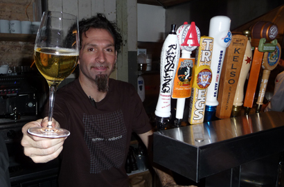

about us
Terroir | Tribeca opened in Spring 2010. The space was a cheese production facility back when Washington Market thrived along the Hudson River.
Interiors, designed by Richard Lewis, repurposed the original, roughhewn wood and burnished, time-worn metal fabrications to stand tribute to Tribeca's history as one of America's first post-industrial neighborhoods.
The drive of the food and beverage program is to give voice to place...all of our wines / beers / foodstuffs must resonate with their origins and be produced in a manner true to their history and culture.
Most importantly, everything must simply taste yummy!
autobiography of paul grieco
Born in a manger, on a starry, cold night, with gifts awaiting from prominent citizens of the old world. Boy, I wish this was my creation story. Alas, I am the second son of Margaret and Charles Grieco (neither a carpenter or a virgin but both angels in their own way), born in the sterile confines of St. Michael’s Hospital in Toronto, Canada. If the rumors are true, my father was actually at the family restaurant, La Scala, working with his father on the storied night of my miraculous birth; he did receive a phone call to get his arse down to the hospital and dutifully did so. Anyway, that is the beginning of my personal tale. My personal tale did not begin as a wine tale, despite the family restaurant upbringing. While my older brother, John, and I went on Saturday mornings to be with Dad…to set tables / polish silverware / vacuum floors…the closest we came to a bottle of wine was to admire from afar the scroll on the neck of the bottle (Fazi-Battaglia Verdicchio) or to wonder where exactly / what exactly Soave Bolla was. Simply put, I was a consumer of cow’s juice as I wanted grow up big and strong and play professional soccer. I didn’t have my first glass of wine until I was 18 years of age but, even then, my beverage of choice during my very unacademic time at the University of Toronto was a Fuzzy Navel (this time / place drink also indicates that my desire to kick a little leather ball around a big patch of grass never came to fruition).
The great blessing of my parents upon their four children was to give them every opportunity / open all doors for opportunity. With that in mind, I never longed to be in the restaurant business. And I certainly never desired to be part of a family business. But, after a failed attempt at graduating from a venue of high education, my father decided to reign in the freedom (my new aspiration was to be a DJ and concert promoter) and put me to work at our restaurant. I did try to have as much fun as a 20-year-old could muster under the watchful eye of family until I was sent off to Italy for 28 days to learn about food and wine.
And this is where I learned to have a ton of fun. More importantly, I found that the world of wine was all-encompassing. My failure at U. of T. was not due to a desire to find a livelihood with two turntables; it was simply due to a lack of interest in the courses I had chosen to study. The brief sojourn to Italy in my 20th year brought to light all that I was intrigued by: history / culture / civilization / philosophy / the traditions of the table / the ability to connect across all perceived statuses with food and drink in front of you. And I experienced all of this through a yummy beverage known as wine. And through wine I could engage with / experience all things that seemed to matter. And have I stated that it tasted great?! Upon returning home to Toronto and the hallowed rooms of La Scala, I made it a point to fully immerse myself in all things wine. And hospitality. Lest we forget, my world view was formed by what happens at the table (in a restaurant) and the act of hospitality encouraged an interaction of people that I relished… and still relish above all else today.
After a few years working side by side with family (this was an incredible blessing), I decided to move to the metropolis of New York City, to revel in the greatest food and wine city on the planet. After arriving in March, 1991, I was lucky to cross the threshold of Remi Ristorante and its exacting and loving GM, Christopher Cannon. Next to my father, Chris remains a profound teacher in my life. He also opened many doors into the NYC wine world, introducing me to importers and distributors who would take me on many a wine journey. Over the next few years, I plied my hospitality trade at Bouley (the original location), Gotham Bar & Grill, Gabriel’s and Judson Grill. In 1995, looking for a simple restaurant job before moving back to Toronto (it was time, or so I thought), I worked as a server at Gramercy Tavern, the new and profound hospitality temple by Danny Meyer and Tom Colicchio. Well, needless to say, I never returned to Toronto as I really, really, really fell in love with our industry while working the floor. And in 1997, Danny and Tom gave me the opportunity to oversee the beverage program at G.T. Not only was the wine / beer / spirit list sizeable, I was also given the freedom to push the program into any / every direction that I could. And it was here that I learned that we truly lived in a world of wine.
In 2002, the desire to finally open my own joint and fully take control of a wine / food / hospitality experience was too great to ignore. Along with a former Gramercy Tavern sous-chef, Marco Canora, we opened Hearth Restaurant in the East Village in the fall of 2003.
It was an awakening to go from a $500,000 cellar at G.T., with a monthly spending budget of $100,000, to a much smaller joint, with a $50,000 cellar and a monthly spending budget of $25,000. But it was perfect. Along with Marco’s impeccable culinary creations, I was able to expand upon my wine journeys (please note that this references theoretical journeys…through the tasting and researching of wine and NOT the actual getting on a plane and going to places all over the planet). The first Terroir Wine Bar opened in 2008, in a super small space, down the street from Hearth. We had never wanted to open a wine bar but a persistent landlord with an available space convinced us otherwise. It took a minute or three but we quickly realized that Terroir would allow us to further push the conversation of wine & food, due to minimal rent and a very controllable cost of operations. As it relates specifically to wine, Terroir was viewed as a sandbox: our place to play, with our toys and our rules and our friends. The intimacy and connection we were able to have as a staff and with our guests further enlightened us to what wine could truly be: it could be everything. And an engagement with it could cause you to truly change your world view. The world of Terroir continues to push all boundaries in the wine world (though Marco and I parted ways in 2014). And I spend all my days pursuing conversations about wine and illuminating guests on the change agent that wine can be.
Cheers.